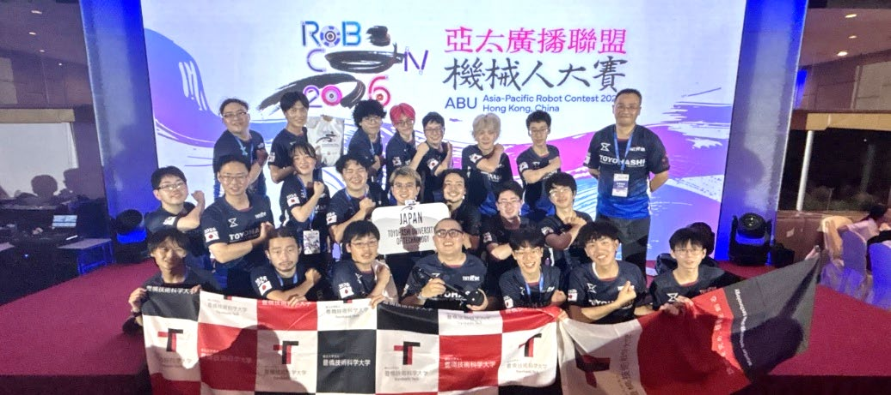

技科大祭特別号
講演会 『技科大の顔』
ロボコン同好会の顔
講演内容
ロボコン競技がユーチューブ配信や NHK で放映されるとき、時間の都合からルールや競技解説が中心となり、チームや学校について詳しく紹介されることはありません。そこで『ここだけの話』を少しだけ紹介します。
実はロボコン同好会で活躍した同窓生が、数年前から他校の指導者として活躍しています。
近い将来、同窓生が育てた他校のチームと本校のロボコン同好会の対決も夢ではありません。
今や『ロボコン同好会』は豊橋技科大の顔の一つです。
当日は第 49 回技科大祭、そして豊橋技術科学大学開学 50
周年の記念イベントとして、
『ロボコン同好会』で活躍された同窓生の皆さんやかつての顧問の先生にお集まりいただきます。
短い時間ですが、競技を離れても『ロボコン同好会』に協力を惜しまない思い。
メディアでは紹介されない、『これまで』と『これから』の思い。
これらの思いを『ここだけの話』として、皆さんと共有し語り合いたいと思います。
- 日時
- 2026 年 10 月 11 日(日) 13:00 ～ 14:30 (開場 12:30)
- 会場
- ひばりラウンジ (キャンパスマップ 45 福利施設（食堂・喫茶室・売店）内)
第 49 回 技科大祭のご案内
豊橋技術科学大学へのアクセス方法や期間中のイベントスケジュールは
以下の『豊橋技科大 第 49 回技科大祭』
のサイトをご覧ください。
https://sea.tut.ac.jp/gikadaisai/index.html
ABU ロボコン 2026
ベスト 4！

- タイトル
- : ABU Asia-Pacific Robot Contest 2026 Hong Kong, China
- 開催国(地域)
- : Hong Kong, China(香港)
- 会場
- : Queen Elizabeth Stadium, 18 Oi Kwan Road, Wan Chai, Hong Kong
- 開催日時
- : 2026 年 8 月 23 日(日) 12:00(HKT; 香港時間) <日本時間 / 13:00> START